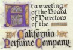
Resolution to Alexander D. Henderson Sr.
|
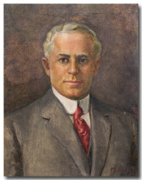 |
||
Alexander Dawson Henderson Sr. | ||
|
Alexander Dawson Henderson Sr. was born in Brooklyn, New York on February 28, 1865. He became Vice-President and Treasurer of the California Perfume Company (now called Avon Products, Inc.), which was founded in 1886 by David H. McConnell. Click here to see a localwiki article about Alexander D. Henderson. Click here to see a FamilySearch person page about Alexander D. Henderson. |
||
| Important Facts | ||
| February 28, 1865 | Alexander Dawson Henderson was born in Brooklyn, New York. He was the sixth child of Captain Joseph Henderson and Angelina Annetta Weaver. Source: Ancestry.com. U.S., Passport Applications, 1795-1925 [database on-line]. Lehi, UT, USA: Ancestry.com Operations, Inc., 2007. |

|
| July 26, 1870 | The 1870 US Federal Census lists Joseph Henderson (46), Angelina (38) living at home with their three daughters and three sons: Sarah R. (20), Maurice D. (18), Joseph Jr. (16), Mary Ann (10), Angelina A. (8), and Alexander D. (6). Source: 1870 US Census, 21-WD Brooklyn, Kings County, New York, Series: M593, Roll: 961, Part: 1, Page: 349A. | |
| June 4, 1880 | The 1880 U.S. Census lists the entire Henderson family: Joseph (52) and Angelina (48) living at home with their three daughters, Sarah R. (30), Mary A. (20), Angelina A. (18), and three sons, Maurice (28), Joseph (26), Alexander (15). Alexander was listed as going to school, and Barbra Stroller (20) as Housekeeper. Source: 1880 US Federal Census for 983 Myrtle Ave., Kings (Brooklyn), New York City-Greater, New York. |
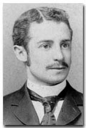 |
| 1883 | Alexander graduated from the Brooklyn Central Grammar School for boys. | |
November 28, 1886 |
The opening reception of the Orchis was held at the home of Mr. Alexander D. Henderson, 633 Willoughby Avenue. Among those present were: Mr. and Mrs. Joseph Henderson, Mr. Maurice Henderson, Mr. and Mrs. Charles Hendrickson, Mr. and Mrs. Frederick Wilcox, and Mr. John D. Schuller. Source: Brooklyn Daily Eagle, pg. 14, November 28, 1886. | |
October 7, 1890 |
His father, Captain Joseph Henderson died at their family home at 633 Willoughby Avenue, Brooklyn, New York. Source: Brooklyn Municipal Archives (Death Certificate No. 15592). |
|
1889-1890 |
Mr. Henderson continued to live with his mother at their family home, which was listed in the New York Directory as 633 Willoughby Avenue, Brooklyn, New York. His occupation was listed as clerk. Source: Ancestry.com, Brooklyn, New York Directories, 1888-1890. |  Brooklyn Map |
1890 |
He worked for the
Union Warehouse Company in New York City,
for which he held the position of private secretary to Mr. Edward B.
Bartlett. Source: Brooklyn Daily Eagle, December 15, 1897. |
|
March 15, 1891 |
A.D. Henderson, an employee of the Union Warehouse Company, loaned Mr. Bartlett $15,000 on March 15th and $10,000 on March 24th. Source: Brooklyn Daily Eagle, pg. 1, December 13, 1897. | |
| March 19, 1891 | Mr. Henderson was listed as the President of the St. Andrew's Brotherhood chapter for the Episcopal Church of St. Matthew, Willoughby avenue and Pulaski street in Brooklyn, New York. He spoke at the first anniversary service of the St. Matthew's chapter and reviewed the work of the year telling of the growth of the chapter since its organization. Source: Brooklyn Daily Eagle newspaper. | |
February
17, 1892 |
At age 26, Alexander D.
Henderson married Ella M. Brown at the Emmanuel Baptist
Church at 291 Ryerson Street, Brooklyn by the Rev. John Hampstone. Source:
Certificate Number 522 of the Brooklyn Marriage License Bureau and
the February 18th edition of the Brooklyn Daily Eagle. |
|
February 18, 1892 |
The marriage announcement appeared in the Brooklyn Daily Eagle Newspaper. It listed that the best man was John D. Schuller and the maid of honor was Miss Sadie Brown. The bride wore a costume of pearl silk, and entrain, and carried a bouquet of pink roses. Her brother, William Brown, gave her away. An informal reception followed, during which the newly married couple departed on an extensive honeymoon to Canada and other objective points. Source: Brooklyn Daily Eagle, February 18, 1892, pg 4. col. 6. | |
1892 |
Alexander and Ella set
up housekeeping in the Flatbush district of Brooklyn, New York. They
rented a three-story brownstone house at 142 Midwick Street in Brooklyn. Source: So Long It's Been Good To Know
You, pg. 2, Jerry Henderson. |
|
January 4, 1893 |
Their first child, Joseph Dawson Henderson, was born. Source:
Green-Wood Cemetery tombstone. |
|
April 2 , 1893 |
Joseph Henderson was baptized at the St Matthew Church in Brooklyn, New York. Sponsors were Angelina A. Henderson and Mr. Brown. Source: Records from the Church of St. Luke and St. Matthew. | |
November 5, 1893 |
Their first child, Joseph Dawson Henderson, died in infancy (in highchair), which was a traumatic experience for a young married couple. Source: "So Long It's Been Good To Know You", by Jerry Henderson. |
|
| November 7, 1893 | Their son's death appeared under "Deaths" in the New York Herald. It read: "On Sunday, November 5, Joseph Dawson Henderson, only son of Alexander D. and Ella M. Henderson, aged 9 months and 22 days. Friends and relatives are invited to attend the funeral services, at the residence of his parents, 48 Hart St., Brooklyn, on Wednesday evening, November 8, at eight o'clock. Source: New York Herald. | |
November 9, 1893 |
On November 9th, their son was buried in the family plot at the Green-Wood Cemetery at 500 25th St., Brooklyn, New York - Lot 13244, Section 88. The tombstone reads: Joseph Dawson Henderson Eldest son of Alexander D. and Ella B. Henderson. Source: Green-Wood Cemetery Records. | |
June 8, 1894 |
"Brooklyn Firm Fails" was
announced in the Daily Eagle and said that Mr. Edward B. Bartlett had
died two weeks earlier, which resulted in the Union Warehouse going
into debt to its creditors (including the loans made to Henderson in
1891). The insurance company refused to honor the loss claim, resulting
in Mr. Henderson losing his money. Source:
Brooklyn Daily Eagle Newspaper, pg 12, June 8, 1894. |
|
February 16, 1895 |
Alexander D. Henderson Jr. was born in Brooklyn, New York. Source: So Long It's Been Good To Know You, pg. 3, Jerry Henderson. | |
May 30,
1894 |
Alexander D. Henderson
Sr. answered an ad for bookkeeper at $15.00 a week working for
David H. McConnell, who established the California Perfume Company
in Brooklyn, New York. Mr. Henderson was the 2nd employee. Source:
Minutes from the Board of Directors dated January 08, 1925 and the CPC
Outlook of 1922. |
|
1896 |
Mr. Henderson Sr. became
Vice-Presidentand Treasurer at the time the California Perfume Company
was incorporated. Source: Company
Officials, CPC Web site. |
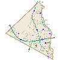 |
April 7, 1896 |
Alex D. Henderson was announced in the Brooklyn Daily Eagle as Vestrymen of the St. Matthew's Church, Throop Avenue and Pulaski Street. Source: Brooklyn Daily Eagle, April 7, 1896. | |
| The California Perfume Company was a family company and there is no doubt that Mr. McConnell and Mr. Henderson were the architects of it. Mr. Henderson helped to shape its policies and assist in its growth. He was an intensely upright and honest man, and he and Mr. McConnell knew they could trust each other. Source: Mary's Family Connections, 1979, pg. 94. | ||
July 30, 1897 |
The New York Times announced that the "Mutual Manufacturing Company of New York City, to manufacture jewelry, silverware, and household articles; capital stock, $3,000. Directors - Alexander D. Henderson and Elijah H. May, Brooklyn; David H. McConnell, Suffern." Source: ProQuest Historical Newspapers The New York Times, pg. 2. | |
December 13, 1897 |
A front page article appeared in
the Brooklyn Eagle, with the title: "WANTED MONEY NOT STOCK, Suit Against the Estate of the Late E. B. Bartlett" "Trial of a suit to recover $25,000 and interest from Maria H. M. Bartlett, widow of the estate of the late E. B. Bartlett of the Union Warehouse Company, brought by Angelina A. Henderson began today before a jury in the Supreme Court. The plaintiff alleges that through her son, A.D. Henderson, an employee of the Union Warehouse Company, she loaned to Mr. Bartlett one loan on March 15, 1891, being of $15,000, and the other on March 24, 1891 for $10,000. Notes were given to young Henderson who assigned them to his mother." Source: The Brooklyn Daily Eagle, Monday, December 13, 1897, Vol. 57. No. 344. |
|
December 15, 1897 |
An article appeared in the Brooklyn
Daily Eagle, which said: "VERDICT FOR $30,300, Mrs. Angelina A. Henderson Wins Her Suit Against Mrs. Maria H. M. Bartlett as Administratrix" The article goes on to say, "The jury at 6 o'clock last evening returned with a verdict for $30,300, the amount claimed." Source: The Brooklyn Daily Eagle, Wednesday, December 15, 1897, Vol. 57, No. 346, pg 16. |
|
| 1898 | The case, Henderson v. Bartlett was published in the report of cases head and determined in the Appellate Division of the Supreme Court of the State of New York. Angelina A. Henderson was listed as the "Respondent" in the case against Maria H. N. Bartlett, as Executrix of the Last Will and Testament of Edward B. Bartlett, Deceased, Appellant. Source: Official Edition Reports of Cases head and determined in the Appellate Division of the Supreme Court of the State of New York, 1938. | |
1897-1898 |
Listed as: HENDERSON Alex. D. mgr. h 174 Pulaski. Source: 1897.98 LAIN'S DIRECTORY Brooklyn Directory. | |
April 5, 1899 |
The New York Times publishes that Alexander D. Henderson became Vestryman of the St. Mathews's Church in Brooklyn during the Easter Vestry Elections. Source: ProQuest Historical Newspapers The New York Times pg. 7. | |
April 18, 1900 |
The New York Times announced that Alexander D. Henderson of the St. Matthew's Church, Throop Avenue and Pulaski Street, became Vestryman. Source: ProQuest Historical Newspapers The New York Times. | |
June 14, 1900 |
The 1900 U.S. Federal Census lists the Henderson family living on 174 Pulaski Street in Brooklyn, New York: Alexander Sr. (36) and Ella B. (35), Alexander Jr. (5), and servant Mary Kiley (23). Source: 1900 Census: Brooklyn Ward 21, Kings, New York; Roll: T623 1058; Page: 16A; Enumeration District: 336. | |
1900 |
Mr. Alex Henderson is also listed as living on 174 Pulaski Street. Source: Brooklyn-City Directory. | |
| 1901 | Alexander D. Henderson is listed in the New York business directory: 126 Chambers, California Perfume Co. (R.T.N). Source: Trow's (formerly Wilson's) co partnership and corporation directory of New York. | |
April 10, 1901 April 3, 1902 April 15, 1903 |
On various Easter church elections, the New York Times announced that Alexander D. Henderson of the St. Matthew's Church became Vestryman. Source: ProQuest Historical Newspapers The New York Times. | |
| 1902 | Alex D. Henderson is listed as a Vestrymen for the St. Matthew's Church, Brooklyn. The Rev Frederic W. Norris, Rector, 564 Willoughby Ave., Brooklyn. Source: Journal of the annual convention of the Protestant Episcopal, Volumes 36-37, Page 283. | |
1904 |
Alexander Dawson Henderson
is listed as "Manager" at 38 Murray Street, Manhattan, New
York. His residence was at 174 Pulaski Street Brooklyn, New York. Source: Brooklyn Directory of 1904. |
|
| 1904 | Alexander D. Henderson is listed with the St. Matthew's Church in Brooklyn, living at 171 Midwood Street. Source: Journal of the Thirty-Eighth convention of the Protestant Episcopal Church, Diocese of Long Island. | |
February
25, 1905 |
Girard
Brown Henderson was born. The parents were listed as living
at 171 Midwood Street, Brooklyn, New York. Source: New
York State Birth Certificate. |
|
| June 1905 | Alexander D. Henderson is listed as Treasurer in the Company's Outlook brochure. Source California Perfume Company's Outlook. | |
1905 |
The family came to Suffern,
New York as summer visitors and were boarders in the Tilton Hotel
downtown, which was on the property now owned by the Avon Products
Company. Source: Mary's Family Connections,
pg. 85. |
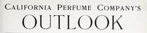 1905 Outlook |
July 11, 1905 |
The New York times announces Receivers Appointed by the Supreme Court - Giegerich, Judge - Hobart W. Geyer et al. vs. Arthur A. Waterman et al. - Alexander D. Henderson. Source: ProQuest Historical Newspapers The New York Times, pg. 9. | |
| July 23, 1905 | The Church of Epiphany joins the Church of St Matthew. The consolidated parish was called Church of St. Matthew. Alexander D. Henderson was one of the vestrymen of the Church of St. Matthew. Source: New-York tribune, Page 6, Image 55. |
|
| July 1905 | The Outlook, a monthly magazine published by the California Perfume Company, listed Alexander D. Henderson as Secretary and Treasurer. Source: Outlook March 1905. | |
| 1906 | Henderson was listed as Churchwarden and Vestryman at the Church of St. Matthew, living at 171 Midwood Street. The church was located at the corner of Tompkins Ave. and McDonough St. Source: Diocese of Long Island, Journal of the Fortieth Convention, 1906. | |
| June 1906 | A. D. Henderson and D. H. McConnell were listed as being from Goetting & Co when attending the annual Perfumers' Association Convention. David H. McConnell had purchased the Goetting business in 1896 and hired Adolf Goetting as Chief Chemist for Suffern Laboratory. Source: American Druggist Pharmaceutical Record, Volume 48, 1906. | |
| November 3, 1906 | The Rockland County Journal wrote that the Sutherland Brothers have accepted the contract to erect the Henderson house on the Nyack turnpike. Source: The Rockland Co. Journal, November 3, 1906. | |
| July 6, 1908 | Mrs. Henderson was listed in the Brooklyn Daily Eagle: "Mrs. Ad. D. Henderson, whose home is at 142 Midwood street, will remain at Suffern, Rockland Country, N. Y., for the summer. Soruce: The Brooklyn Daily Eagle, New York, Monday, July 6, 1908. | |
October 18, 1908 |
Mr. Alexander Henderson tendered to the Bishop the Certificate of Donation, that signified that the St. Matthew Church was free from debt. Source: Records from the Church of St. Luke and St. Matthew. | Henderson's signature (1909) |
| April 13-15 1909 | Alexander D. Henderson and David H. McConnell were listed as members in attendance at the fifteenth annual meeting of the Manufacturing Perfumers' Association. Source: Proceedings of the Fifteenth Annual Meeting of the Manufacturing Perfumers' Association of the United States, New York. | |
June 1, 1909 |
Mr. Henderson's mother (Angelina) died at which time he inherited his share of his father's estate of $25,000. Source:Mary's Family Connections, pg. 90. | 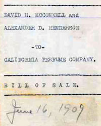 1909 Agreement of Incorporation |
| June 7, 1909 | Henderson signed a petition as executor of the Will and Testament of his mother, Angelina Henderson. Source: Petition, Citation, Proofs of Will, Kings County Surrogate's Court, June 11, 1909. | |
| June 16, 1909 | An 1909 Agreement of Incorporation for the California Perfume Company was documented. It shows that David H. McConnell and Alexander D. Henderson were partners. It also says that the two men agreed to transfer all assets in other companies to the California Perfume Company, a corporation in the state of New Jersey. Source: Hagley Museum and Library. | |
September 3, 1909 |
The New York times announces Receivers Appointed by the Supreme Court - Judge Giegerich, Knickerbocker
Trust Co. vs. Fireproofing Mfg. Co. - Alexander D. Henderson. Source:
ProQuest Historical Newspapers The New York Times, pg. 11. |
|
September 4, 1909 |
The New York times published an article entitled "Suite Involving Water Front Parcel" and announces Alexander D. Henderson as receiver of the leasehold property on the east side of Harlem River together with the equipment, machinery, and plant of the Fireproofing Manufacturing Company, a West Virginia corporation, pending a suit brought by the Knickerbocker Trust Company, as trustee, to foreclose a mortgage of $87,000 made on Sept. 1, 1902 to secure an issue of bonds. Source: New York Times; Sept 4, 1909; ProQuest Historical Newspapers The New York Times pg. 12. | 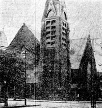 St. Matthew ChurchMcDonough St. and Tompkins Ave. |
| March 1902, 1904, 1906, 1907, 1909-1912 | Mr. Henderson was listed in connection with the following
companies: Goetting & Co. (David H. McConnell & Alexander D. Henderson) 126 Chambers; McConnell D. H. & Co. (David H. McConnell & Alexander D. Henderson) 126 Chambers; Mecca Oil Co. (N. Y.) (David H. McConnell, Pres. Alexander D. Henderson Treas, Capital, 4450,000, Directors: David H. McConnell, Alexander D. Henderson, Edward P. Fowler, William H. Carey, Frederick Roosevelt, Frederick Crane, Montague Douglas, C. C. Bowles) 126 Chambers; Mutual Mtg. Co. (N. Y.) (David H. McConnell, Pres. Alexander D. Henderson. Sec. Capital $3,000. Directors: David H. McConnell, Alexander D. Henderson) 66 Reade; Savol & Co. (David H. McConnell & Alexander D. Henderson, only) 126 Chambers. Source: The Throw Copartnership and Corporation directory of the Boroughs of Manhattan and the Bronx, city of New York, March 1909. |
|
| March 21, 1909 | The Brooklyn Daily Eagle had an article about Henderson graduation from school: "The Chums of '83, an organization composed of graduates of the class of 1993, Central Grammar School, now the Boys High School, held their annual dinner at the Crescent Club on Saturday evening, March 13, the twenty-sixth anniversary of their graduation. Source: The Brooklyn Daily Eagle, New York, Sunday, March 21, 1909. | |
| December 23, 1909 | Mr. A. D. Henderson is listed as the Executor for his mother, Angelina A. Henderson, in her death and collection of claims. Claims had to be submitted by December 31, 1909. The order from Hon. Herbert T. Ketcham was dated June 24, 1909. Source: Brooklyn NY Daily Eagle 1909. | |
1910 |
Mr. Henderson was listed as "Alex D Henderson sec. 126 Chambers Mhtn. h 142 Midwood". Source: 1910 Brooklyn Directory. | |
| Mr. Henderson Sr. built a large Georgian type house on the hill at Campbell Avenue and the Nyack Turnpike (Route 59) in Suffern, New York. The household was accommodated by a butler, James, and a household cook. Mrs. Henderson (Ella Brown) had a fourteen acre working farm with a cow, large vegetable garden, stocked fish, and a huge greenhouse. Source: Mary's Family Connections, pg. 85. |
House in Suffern, NY |
|
| April 20, 1910 | The annual election of officers was held at the St. Matthew's Episcopal Church Men's Club. Mr. Alexander D. Henderson was listed as on the governors. Source: Brooklyn NY Daily Eagle 1910. | |
| June 18, 1910 | The Rockland County Journal reported that the New York Telephone Company had connected Mr. A. D. Henderson, of the Nyack turnpike to the with the central office. Source: Rockland County Journal | |
July 15, 1910 |
Judge Glegerich of the Supreme Court appointed Alexander D. Henderson receiver for the Alabama Securities Company of 165 Broadway on application of Edward V. Harman, who obtained a judgment against the company on March 25 for $12,232 which was returned unsatisfied by the Sheriff on April 14. Source: ProQuest Historical Newspapers The New York Times, pg. 9. | |
| Aprint 6, 1910 | He was listed as owning a Buick and living at 142 Midwwod Street. Source: Brooklyn Life | |
April 19, 1910 |
The 1910 U.S. Census lists the Henderson family as Alexander Sr. (45) and Ella B. (42) and their two sons, Alexander Jr. (15), Girard B. (5), and Lizzy Martys (15), living at 142 Midwood Street. Source: US Census for New York, KINGS, 29-WD BROOKLYN, Series: T624, Roll: 982, Part: 2, Page: 188A. | |
August 6, 1910 |
$500.00 was deposited with the Green-Wood Cemetery to provide for an endowment to maintain the family Lot 13244 Section 88, which is a lot size of 189 feet. Source: The Green-Wood Cemetery records. | |
| 1912 | It was written that, "AD Henderson of the California Perfume Company, the secretary of the association, has secured the use of the rooms in the Whitehall Club for the business session and has provided for the customary service of luncheons to the members attending these sessions". Source: Southern Pharmaceutical Journal - Page 365. | |
| January 1912 | The Hatfield Auto Truck Company of Elmira, N. Y., capital $1,500,000. Incorporators: David H. McConnell, Alexander D. Henderson and Arthur S. Hoyt. Source: Operation & Maintenance magazine, Published by Chilton Class Journal Co., January 1912. | |
| October 3, 1912 | A. D. Henderson is listed as Vice President along with John D. Schuller, Treasurer of the The Art Color Plate Engraving Company. Stanly Wilcox is identified with the publishing and advertising agency fields and secretary and sales manager of the company. Source: Printers' Ink A Journal for Advertisers, Volume 81 - Page 53. | |
| April 1913 | A. D. Henderson is listed as an officer and Secretary, representing Goetting & Co, 31 Park Place, New York (established 1872) at the Manufacturing Perfumers' Association. Henderson said at the meeting: "Gentlemen, I thank you for making me your Secretary again. I feel very much honored in having been nominated and elected. I hope to serve you to the best of my ability this year, and I thank you. (Applause). Source: Proceedings of the Nineteenth Annual Meeting of the Manufacturing Perfumers' Association, 1913. | |
| February 20, 1913 | Henderson and McConnell were listed as plaintiffs in a successful suit against enforcing an ordinance to impose a license tax of $25 a day on all solicitors for retail trade not having a fixed place of business in the city. This was reported in the SF Newspaper with the title: "Court Enjoins Charging of License for "Drummers." Source: The San Francisco Chronicle. | |
January 1914 |
Mr. and Mrs. Henderson went to Florida with Mr. and Mrs. McConnell for a two-week vacation. Mr. McConnell and Mr. Henderson were ardent golfers and thoroughly enjoyed playing the game. Source: So Long, It's been good to Know You, Jerry Henderson, pg. 6. | 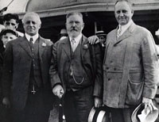 A.D. Henderson, Adolph Goetting, and David H. McConnell (1914) Sr. Source: Hagley Museum and Library |
| 1914 | Mr. Henderson is listed as Secretary and Chairman of the Committee on Fraternal Relations of the Manufacturing Perfumers' Association and a member of the Goetting & Co of 31 Park Place, New York (established 1872). Mr. David H. McConnell was also listed. Source: Twentieth Annual Meeting of the Manufacturing Perfumers' Association, 1914. | |
| 1914 | Mr. Henderson is listed as owning a "Pleasure Car" with the following information: 52084 Alexander D. Henderson, Suffern, National. Source: Official automobile directory of the State of New York. | |
| June 11, 1914 | The New York Herald said in an article titled “Call of Europe for summer Attracts Many,” that Mr. and Mrs. Alexander D. Henderson, Mr. Girard B. Henderson, and Mr. Alexander D. Henderson, Jr. were onboard the Adriatic, of the White Star line, bound for Liverpool. This was a two-month vacation-business trip to buy "essential oils from the French." The family visited the oil factories that made the perfume and see beautiful fields of flowers in France. Source: So Long, It's been good to Know You, Jerry Henderson, pg. 6. | |
| July 12, 1914 | Mr. and Mrs. Henderson and their two children, Alexander and Girard, are listed in the Brooklyn Eagle newspaper as "Brooklynites in Paris." Source: Brooklyn NY, Daily Eagle, 1914. | |
July 22, 1914 |
David H. McConnell quotes
a letter that Alexander D. Henderson wrote from Luzern, Switzerland,
which described the process of harvesting flowers and the making of
perfume for the California Perfume Company. On the trip to Europe,
Mr. Henderson brought his family, which was a combined business and
pleasure trip. Source: The Story of Perfumery and
the CPC, Avon Archives 1924. |
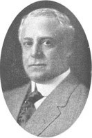 Alexander
D. Henderson |
| July 1914 | Mr. Henderson and his family were caught in the "war zone" before returning to the United States because of World War 1, which broke out in the summer of 1914. They were stranded in Brussels, Belgium for two weeks because of the war panic. Kaiser Wilhelm of Germany was warning that he would sink any ship flying a French or English flag. They eventually got accommodations on the SS New York and sailed from South Hampton, England back home to New York. Source: So Long, It's been good to Know You, Jerry Henderson, pg. 6. | |
| April 1915 | Mr. Henderson is listed as ALEXANDER D. HENDERSON, Vice-President and Treasurer of the California Perfume Co, 31 Park Place, New York; David H. McConnell, President; WM. SCHEELE, Secretary. AE WILLIAMS, Assistant Secretary. Source: Manufacturing Perfumers' Association of the United States, page 201. | |
| 1915 | Alexander D. Henderson had a lien against a plot in the Town of Ramapo, assessed to Stanley L. Wilcox of Rockland. The Country Treasurer authorized the property to be assigned to Henderson because of the unpaid taxes. Source: Proceedings of the Board of Supervisors of Rockland Country, 1915. | |
May 7, 1915 |
The New York times announces new incorporations, which included the California Perfumery Co., Jersey City, to deal in perfumery, toilet preparations, $5,000: Alexander D. Henderson, William Scheele, William H. Carey, all of Jersey City. Source: ProQuest Historical Newspapers The New York Times, pg. 17. | |
| 1915 | Alexander D. Henderson Jr, is listed as son, living in Ramapo, Rockland, New York, age 20, in the New York State Census. Source: New York, State Census, 1915, index, FamilySearch.org. | |
| June 14, 1915 | Mr. Henderson took the train to San Francisco, to help set up a booth to advertise the perfume products at the 1915 Panama-Pacific International Exposition in San Francisco, California. By train, it took 4 days to get to San Francisco. The perfume won the Gold Medal at the Exposition. Because of this Mr. McConnell changed the name of the company to the California Perfume Company. Winning the Gold Medal gave the perfume company a great deal of recognition. Source: "So Long It's Been Good To Know You", pg. 3, Jerry Henderson. | 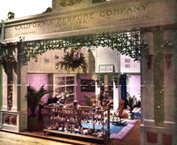 Panama-Pacific
Exposition |
| August 1915 | The Art Color Plate Engraving Co (NY) was incorporated by John D. Schuller Treas, Capital $25,000, Directors included Alex D. Henderson and David McConnell, 418 W 25th St. Source: Polk's New York copartnership and corporation directory: boroughs, Page 57. | |
| December 3, 1915 | An ad appears in the Brooklyn Daily Eagle about their home on 142 Midwood Street, which meant that Henderson still owned the home while living in Suffern. | 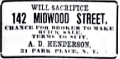 Brooklyn Daily Eagle Ad |
January 28, 1916 |
The New York times announced new incorporations, which included the California Perfume Co., Suffern, perfumes, cosmetics, flavoring, extracts, fruit juices, household supplies, carry on business with $75,000: W. Scheele, toilet preparations, $5,000: A. D. Henderson, D. H. McConnell, Suffern. Source: ProQuest Historical Newspapers The New York Times. |
|
| 1916 | David H. McConnell and Alexander D. Henderson were listed as directors of the California Perfume Company Employees' Savings and Loan Association. Source: Annual Report of the Superintendent of the Banking Department of the State. Page 83. | |
1916 |
The California Perfume Company was incorporated in 1916, and through subsequent changes in name it became Allied Products, Inc., and later Avon Allied Products, Inc. Source: BUD HASTIN FROM HIS AVON COLLECTOR'S ENCYCLOPEDIA, 17TH EDITION. | |
1916 |
To help expand the business,
Mr. Henderson invested $25,000 in the California Perfume Company. Mr.
Henderson’s
capital as well as his business partnership with Mr. McConnell must
have been vital to the business at that time, as Mr. Henderson acquired
one-quarter of the entire stock of the company; and both men, and their
families, prospered. Source: Mary's Family Connections,
pg. 91. |
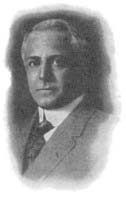 Alexander D. Henderson Sr. |
| Mr. Henderson's office was at 31 Park Place, corner of Church Street, one block from the New York General Post Office and the City Hall, in the heart of the great downtown commercial and financial district of Manhattan Island. Source: Mary's Family Connections, pg. 96. | ||
| January 1, 1917 | Alexander D. Henderson was listed as President of the California Perfume Company Employees' Savings and Loan Association at 31 Park Place, New York, N. Y. Total assets were $17,957. Source: New York Legislative Documents. | |
| July 23, 1917 | In a newspaper article entitled "Many Soldiers at the River Spend Sunday at Alexandria Bay" A.D. Henderson, Master Gerard Henderson, and Miss Mary Anthony, of Suffern were listed. Source: Watertown Daily Times (Watertown, NY). | |
| 1917 | In the proceedings of the Board of Supervisors of the Country of Rockland, it was said that Henderson had a lien against a plot in the town of Ramapo, assessed to Stanley L. Wilcox. It was sold for unpaid taxes and acquired by the County of Rockland. The County Treasurer assigned the Country’s equity in the plot to Henderson for the amount of the respective sales tax, interest, penalty, and cost of deeds and redemption notice. | 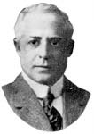 Alexander D. Henderson Sr. Vice-president and Treasurer of the California Perfume Company |
| Mr. Henderson and his son Alex followed a daily routine. They were driven in Mr. Henderson’s car with his chauffeur after an early breakfast, first to the plant or laboratory in Suffern where Mr. Henderson was on personal terms with virtually everyone, the management group in the office and the employees in the laboratory. He took great pride in his products and a real interest and concern for the employees who worked to make them. Mr. Henderson and Alex were then driven on to the station to take the train to the CPC New York offices. Source: Mary's Family Connections, pg. 96. /td> | ||
| 1917-1918 | Mr. Henderson was listed as "HENDERSON, ALEXANDER D., of the firm of Goetting & Co., 31 Park Place. Art Color Plate Engraving Co., V. Pres. and Dir." Source: Directory of Directors in the City of New York, 14 Wall Street. | |
| January 20, 1920 | Alexander D. Henderson Sr. was listed as getting an anual license ($5.00) for the Big Timber Creek in Gloucester County. Big Timber Creek is a 5.6-mile-long stream in southwestern New Jersey. Source: Annual Report of the Commerce and Navigation New Jersey, 1920. | |
1920 |
Mr. Henderson Sr. built a house for his son, Alexander Jr. and his wife in Suffern, New York, across the road from their own house. Source: Mary's Family Connections, pg. 85. | |
February 11, 1920 |
The 1920 U.S. Census lists
Alexander D. Henderson (55), Ella B. Henderson (52), Alexander D. Henderson
Jr. (25) and James Wynne (40) their butler living on South Monsey
Road
in Suffern, N. Y. Mr. Henderson's Father's birth place is listed as in South
Carolina. Source:
Ancestry.com 1920 United States Federal Census. |
James McCreery & Co. Photographic Studio New York, N. Y. |
| Maurice Henderson, Mary Ann, Charles, and Angie Hendrickson would come to the Henderson's in Suffern for Thanksgiving. Source: Mary's Family Connections, 1979, pg. 90. | ||
| January 1, 1921 | Alexander D. Henderson was listed as President of the California Perfume Company Employees' Savings and Loan Association at 31 Park Place, New York, N. Y. Source: New York Legislative Documents. | |
| August, 1921 | Alexander D. Henderson was listed as Treasuer in an ad for the California Perfume Company (see ad on right). Source: The Station Agent Official Publication of the Order of Railroad Station Agents. | |
April 17, 1922 |
Granddaughter, Mary-Ella Henderson was born at 6:45 A.M. at the Good Samaritan Hospital in Suffern, New York. | 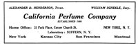 |
| September 5, 1922 | Henderson believed in a good local newspaper and he became treasurer and director of the Ramapo Valley Independent when the old Suffern Independent was sold in 1922. Source: "Suffern Independent Sold To Corporation", Nyack Evening Journal, Wednesday, September 6, 1922. | |
January 26, 1923 |
Alexander Henderson was issued a passport to travel abroad. Mary A. Hendrickson signed an affidavit as his sister. The passport included pictures of himself and his wife, Ella B. Henderson. The passport listed that he would visit Portugal, Italy, Spain, Egypt, France, and Turkey. Source: U.S. Passport Applications, 1795-1925. | |
May 3, 1923 |
The auditing firm, Hurdman and Cranstoun issued a report of the books and records of the California Perfume Company. At the end of 1922, CPC was earning $280,000 on sales of $1,205,000, giving them net earnings of $215,000. In this report, under Accounts receivable, A D Henderson, Sr, was listed with an account for $2,000.00. Source: 1922 CPC annual report. | 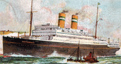 Rotterdam Ship |
| May 4, 1923 | Mr. Henderson and his wife Ella, left the port of Boulogne-Sur-Mer, France on April 25th traveling on the ship Rotterdam. They arrived in New York on May 4th 1923. Source: Passenger Lists of Vessels Arriving at New York, New York, 1820-1897; (National Archives Microfilm Publication M237, 675 rolls); Records of the U.S. Customs Service, Record Group 36; National Archives, Washington, D.C. | |
November 15, 1923 |
A. D. Henderson wrote a letter to the Green-Wood Cemetery on First Baptist Church stationary (Bloomfield, N. J.), instructing the Green-Wood Cemetery to "Please open grave for remains of my brother Maurice Henderson in lot no. 13244, for Saturday November 17th at 11:30 A.M." Source: Green-Wood Cemetery signed authorizations for interments. |  1924 - A. D. Henderson I, II, III Birth of Alex Henderson III |
1921-1924 |
Mr. Henderson, according to the Suffern newspaper, was President of the Rockland Country Branch of the State Charities Aid Association and Chairman of the Red Cross drive for funds during World War 1 in Ramapo Valley, New York. He also actively assisted in the designing and building of the Lafayette Theatre in Suffern, New York. Source: Lathrop, Mary Anthony, Mary’s Family Connections, Lebanon, Connecticut: First Edition, 1979, page 91-92; State Charities Aid Association annual report. 49th 1921. | |
March 26, 1924 |
Mr. Henderson Sr's grandson, Alexander D. Henderson III, was born at the Fifth Avenue Hospital in New York City. Source: New York City Birth Record. | 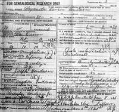 |
January 5, 1925 |
Mr. Alexander D. Henderson
Sr. died in Suffern, New York after a very short illness.
His family and associates mourned him. Source:
New York Death Certificate #5375 and the Suffern
newspaper. |
|
January
6, 1925 |
On Tuesday, the New York Times newspaper posted the following obituary:
HENDERSON - Alexander Dawson, on Jan. 5, 1925, in his 60th year, beloved husband of Ella B. Henderson. Services Wednesday evening, 8 o'clock, Jan 7, at Suffern, N. Y." Source: ProQuest Historical Newspapers The New York Times, pg. 25, Brooklyn Eagle, p22. |
|
| January 7, 1925 | On Wednesday, another
obituary was listed in the Brooklyn Eagle newspaper, which stated:
ALEXANDER DAWSON HENDERSON |
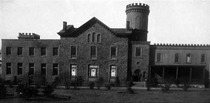 Garden State Crematory - Becker's CastleBeergen, New York |
| January 7, 1925 | Henderson was cremated at the New York and New Jersey Cremation Company (now called the Garden State Crematory) in Bergen, New York. The Rev. Dr. Charles P. Bispham, clergy of the Christ Episcopal Church, Suffern, officiated at his burial. Source: Christ Church records; Cremation #10508. | |
January 8, 1925 |
A resolution adopted and recorded in the minutes by the Board of Directors and officers of the California Perfume Company attesting to the invaluable work done by Alexander Dawson Henderson Sr. An engrossed copy of the resolution was issued to the Henderson family. Mr. McConnell signed the resolution. Source: 1925 Resolution, California Perfume Company. |
|
| January 9, 1925 | Henderson's cremated remains were mailed to Peter S. Van Orden & Sons Funeral home in Spring Valley, New York. Source: Garden State Crematory records. | 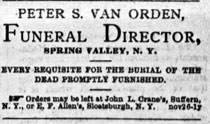 Peter S. Van Orden Funeral DirectorSpring Valley, New York |
| 1931 | A postcard was madThe 1900 U.S. Federal Census lists thee of the Henderson Suffern home looking at the residence from the bottom of the driveway. The printing at the top of the postcard reads: "Residence of Mr. A. D. Henderson, Suffern, N. Y." Source: Suffern Free Library, Suffern, New York; postcard; col.; 3 x 5 in. (7.7 x 12.7 cm.). |
Suffern, New York |
| October 1941 | Henderson was mentioned in an issue of the "Allied Avon" about the "old timers". There is a picture of him next to Adolph Goetting, and David H. McConnell. Source: Allied Avon, Family Album. | |
| November 1, 1941 | The Henderson home caught fire as workmen were engaged in tearing it down. The combined efforts of the Suffern and Tallman fire departments saved the partly demolished building from complete destruction. The house was later sold in September 1944 to Le Roy Sherwood. Source: The Journal News, Rockland Country Newspaper. |
| Other Points Of Interest | ||
|

Last update: June 4, 2026